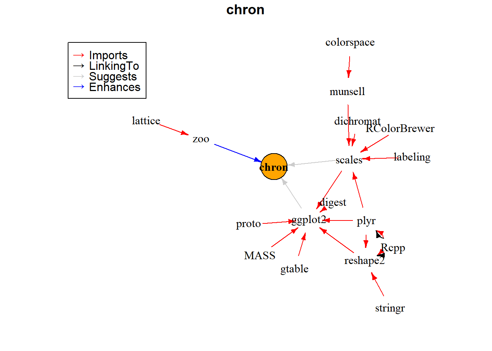

vignettes/deepdep-comparison.Rmd
deepdep-comparison.RmdThere are a few already existing solutions to the problem of visualizing dependencies. In this last section, we will compare deepdep to those solutions.
This solutions are (with links to their GitHub repositories):
First and foremost, our package is the only one that uses ggplot2 and its enhancements, which is currently the most popular way of visualizing anything in R. You can easily modify plots generated with our package.
Secondly, we are trying to keep plots clear and tidy. We’re rather showing general structure of dependencies, their density and also show, which of the dependencies are the most crucial.
At last, deepdep function is able to show levels of dependencies, which is not true for other packages listed here – they either show only first-level dependencies or all possible dependencies
In the following sections we’ll describe why our package is better in some aspects than others, but also features that we’re lacking.
This package allows creating interactive graphs (using visNetwork) to visualize dependencies between packages and also between functions in those packages.
Tool for obtaining information on specified package, especially plotting network of package and function dependencies.
visNetwork.From README.md on Github:
The miniCRAN package makes it possible to create an internally consistent repository consisting of selected packages from CRAN-like repositories. The user specifies a set of desired packages, and miniCRAN recursively reads the dependency tree for these packages, then downloads only this subset.
#> an example from official vignette
library(miniCRAN, quietly = TRUE)
#> Warning: pakiet 'miniCRAN' został zbudowany w wersji R 3.6.1
tags <- "chron"
pkgDep(tags, availPkgs = cranJuly2014)
#> [1] "chron" "RColorBrewer" "dichromat" "munsell"
#> [5] "plyr" "labeling" "colorspace" "Rcpp"
#> [9] "digest" "gtable" "reshape2" "scales"
#> [13] "proto" "MASS" "stringr" "ggplot2"
dg <- makeDepGraph(tags, enhances = TRUE, availPkgs = cranJuly2014)
set.seed(1)
plot(dg, legendPosition = c(-1, 1), vertex.size = 20) # pkgDepTools
Description from official vignette:
The pkgDepTools package provides tools for computing and analyzing dependency relationships among R packages. With it, you can build a graph-based representation of the dependencies among all packages in a list of CRAN-style package repositories. There are utilities for computing installation order of a given package and, if the RCurl package is available, estimating the download size required to install a given package and its dependencies.
graphNEL – not very commonly used and thus not so obvious to modify or adjust.